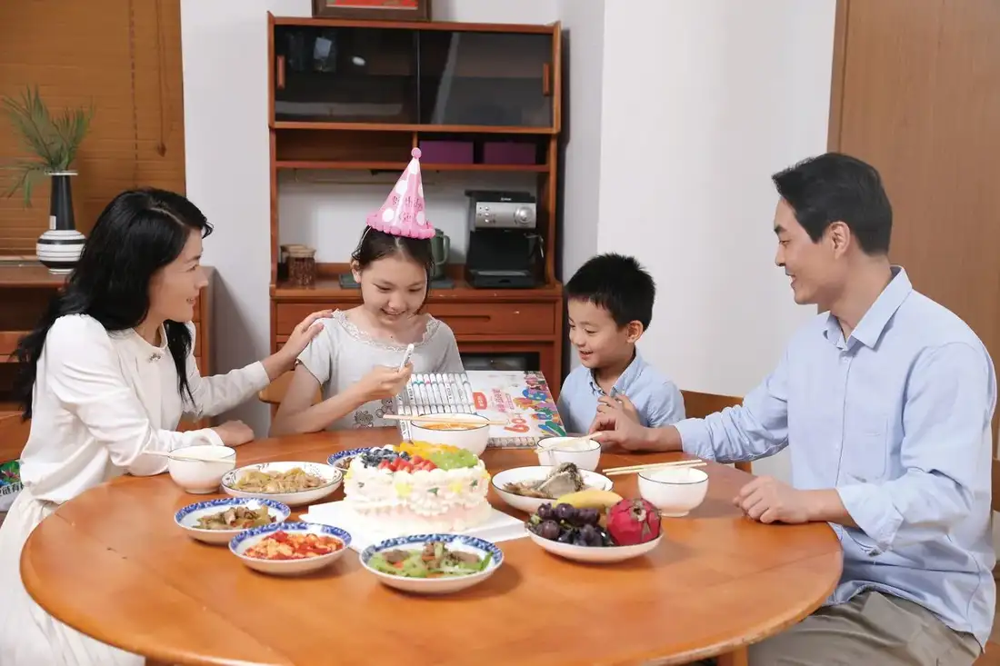
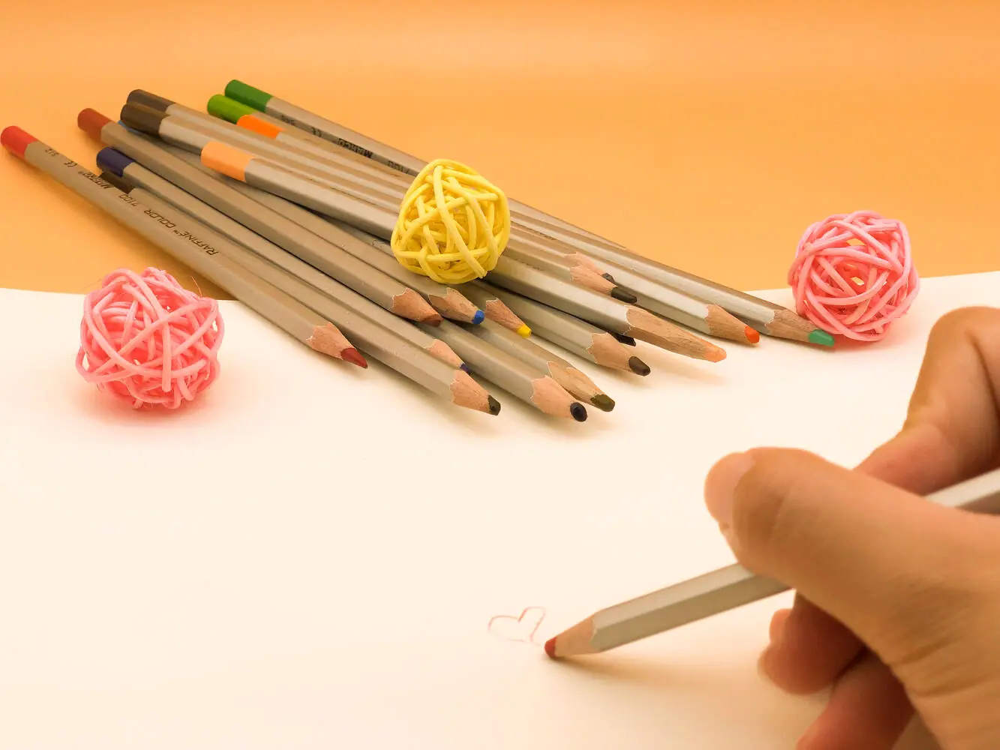
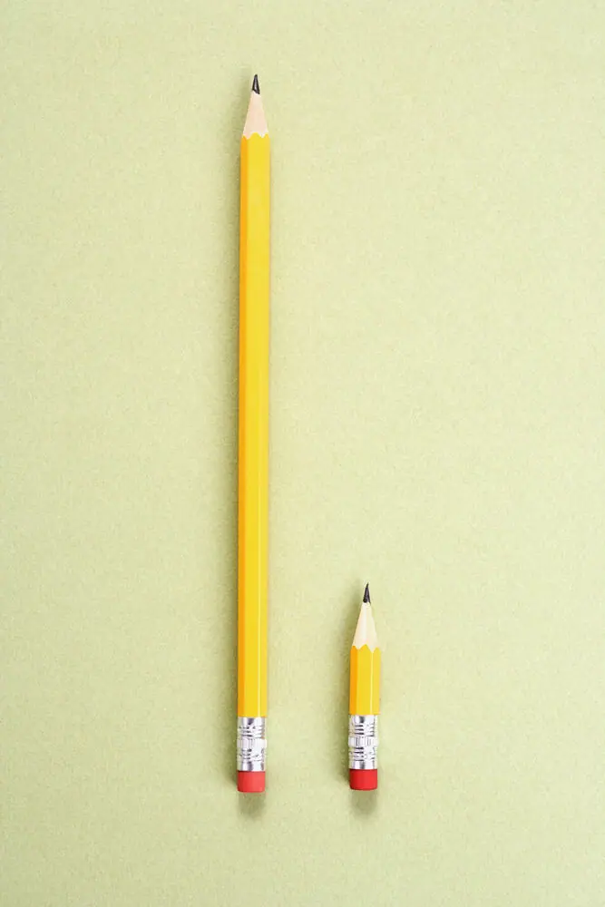

Giáo trình HSK 2 · Lesson 6小雪，生日快乐！
Xiǎoxuě, shēngrì kuàilè!
Tiểu Tuyết, chúc mừng sinh nhật!

Mục tiêu bài khóa
Sau bài học, người học có thể vận dụng các điểm ngôn ngữ chính trong giao tiếp.
形容词重叠Dùng tính từ lặp để tăng sắc thái miêu tả.
“什么的”Liệt kê một số ví dụ không đầy đủ.
结构助词“地”Dùng 地 để nối trạng ngữ với động từ.
Khởi động · 热身
Chọn từ rồi chọn đúng hình ảnh tương ứng.
Nhóm 1
💡 Hãy chọn một từ trước.
Nhóm 2
💡 Hãy chọn một từ trước.
Từ vựng · 生词
Mặt trước có từ, pinyin, nghĩa, loại từ và nút phát/dừng. Mặt sau có hình ảnh và ví dụ theo PowerPoint.
生日
shēngrì
sinh nhật
danh từChạm vùng trống để lật thẻ
爸爸给小雪买了个生日蛋糕。 🔊Bàba gěi Xiǎo Xuě mǎi le ge shēngrì dàngāo.
Bố mua cho Tiểu Tuyết một chiếc bánh sinh nhật. 生日快乐！ 🔊Shēngrì kuàilè!
Chúc mừng sinh nhật! 忘
wàng
quên
động từChạm vùng trống để lật thẻ
小明的生日是什么时候？我忘了。 🔊Xiǎo Míng de shēngrì shì shénme shíhou? Wǒ wàng le.
Sinh nhật của Tiểu Minh là khi nào? Tôi quên mất rồi. 妈妈每年都不忘给我买生日礼物。 🔊Māmā měinián dōu bù wàng gěi wǒ mǎi shēngrì lǐwù.
Mẹ năm nào cũng không quên mua quà sinh nhật cho tôi. 画
huà
vẽ; tranh
động từ / danh từChạm vùng trống để lật thẻ
我喜欢画画。 🔊Wǒ xǐhuan huà huà.
Tôi thích vẽ tranh. 你画的是什么？ 🔊Nǐ huà de shì shénme?
Bạn đang vẽ cái gì? 画笔
huàbǐ
bút vẽ; cọ
danh từChạm vùng trống để lật thẻ

我有很多画笔。 🔊Wǒ yǒu hěn duō huàbǐ.
Tôi có rất nhiều bút vẽ. 谢谢你送我画笔。 🔊Xièxie nǐ sòng wǒ huàbǐ.
Cảm ơn bạn đã tặng tôi bút vẽ. 蛋糕
dàngāo
bánh kem
danh từChạm vùng trống để lật thẻ
朋友给我买了一块蛋糕。 🔊Péngyou gěi wǒ mǎi le yí kuài dàngāo.
Bạn của tôi đã mua cho tôi một miếng bánh. 我喜欢吃蛋糕。 🔊Wǒ xǐhuan chī dàngāo.
Tôi thích ăn bánh kem. 快乐
kuàilè
vui vẻ; hạnh phúc
tính từChạm vùng trống để lật thẻ
他每天都很快乐。 🔊Tā měitiān dōu hěn kuàilè.
Anh ấy mỗi ngày đều rất vui vẻ. 妹妹是一个快乐的孩子。 🔊Mèimei shì yí gè kuàilè de háizi.
Em gái là một đứa trẻ vui vẻ. 打开
dǎkāi
mở ra
động từChạm vùng trống để lật thẻ
打开看看，你喜欢这个礼物吗？ 🔊Dǎkāi kànkan, nǐ xǐhuan zhè ge lǐwù ma?
Mở ra xem thử, bạn có thích món quà này không? 请帮我打开。 🔊Qǐng bāng wǒ dǎkāi.
Xin hãy giúp tôi mở ra. 长
cháng
dài
tính từChạm vùng trống để lật thẻ

这条裤子太长了，他不能穿。 🔊Zhè tiáo kùzi tài cháng le, tā bù néng chuān.
Cái quần này quá dài, anh ấy không thể mặc được. 我跑步的时间不长。 🔊Wǒ pǎobù de shíjiān bù cháng.
Thời gian tôi chạy bộ không dài. 鱼
yú
cá
danh từChạm vùng trống để lật thẻ
这条鱼真好看。 🔊Zhè tiáo yú zhēn hǎokàn.
Con cá này thật đẹp. 哥哥非常喜欢吃鱼。 🔊Gēge fēicháng xǐhuan chī yú.
Anh trai rất thích ăn cá. 肉
ròu
thịt
danh từChạm vùng trống để lật thẻ
我喜欢吃肉。 🔊Wǒ xǐhuan chī ròu.
Tôi thích ăn thịt. 今天妈妈买了很多肉。 🔊Jīntiān māmā mǎi le hěn duō ròu.
Hôm nay mẹ đã mua rất nhiều thịt. 过
guò
đón; trải qua
động từChạm vùng trống để lật thẻ

我很喜欢过生日。 🔊Wǒ hěn xǐhuan guò shēngrì.
Tôi rất thích đón sinh nhật. 爸爸、妈妈和弟弟一起和我过生日。 🔊Bàba, māmā hé dìdi yìqǐ hé wǒ guò shēngrì.
Bố, mẹ và em trai cùng đón sinh nhật với tôi. 地
de
nối trạng ngữ với động từ
trợ từChạm vùng trống để lật thẻ
小朋友高兴地笑了。 🔊Xiǎopéngyou gāoxìng de xiào le.
Đứa trẻ vui vẻ cười. 他舒舒服服地睡了。 🔊Tā shūshūfúfú de shuì le.
Anh ấy ngủ rất thoải mái. 床
chuáng
giường
danh từChạm vùng trống để lật thẻ
我家的床很大。 🔊Wǒ jiā de chuáng hěn dà.
Giường nhà tôi rất lớn. 妈妈正在床上睡觉。 🔊Māmā zhèngzài chuáng shàng shuìjiào.
Mẹ đang ngủ trên giường. 舒服
shūfu
dễ chịu; thoải mái
tính từChạm vùng trống để lật thẻ
我太累了，想舒舒服服睡一觉。 🔊Wǒ tài lèi le, xiǎng shūshūfúfú shuì yí jiào.
Tôi quá mệt rồi, muốn ngủ một giấc thật thoải mái. 今天天气很舒服，我们出去走走吧。 🔊Jīntiān tiānqì hěn shūfu, wǒmen chūqù zǒuzou ba.
Hôm nay thời tiết rất dễ chịu, chúng ta ra ngoài đi dạo nhé. Bài khóa · 课文
Ảnh ngữ cảnh bên trái, nội dung và âm thanh gốc bên phải. Bài khóa 4 giữ đúng dạng đoạn văn.
Tương tác đóng vai
Chọn bài khóa 1–3 và nhân vật. Lời của vai đã chọn sẽ được ẩn; chỉ hiển thị chữ Hán.
Củng cố từ vựng
Lật đáp án từ vựng rồi hoàn thành câu hỏi đọc hiểu.
Câu hỏi đọc hiểu
Mẫu câu cần nhớ: 生日快乐！大大的蛋糕，长长的面条儿。孩子们舒舒服服地睡了一觉。